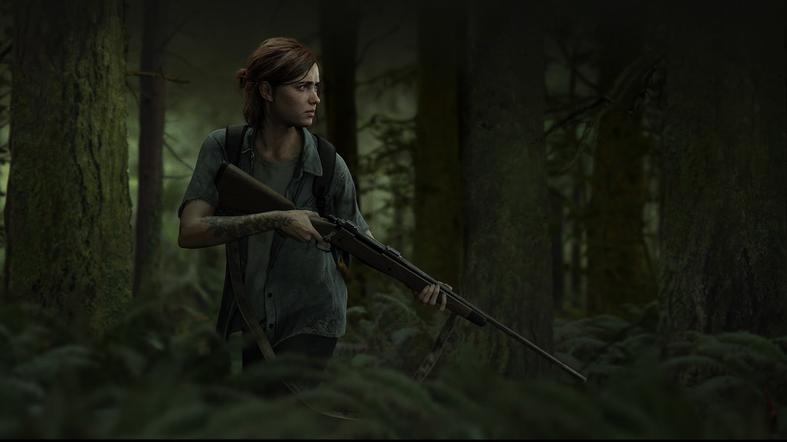

ELLIE WILLIAMS
"Depois de tudo o que passamos... Tudo o que eu fiz não pode ter sido em vão." — Ellie Williams
Quando conhecemos Ellie, ela tinha 14 anos e não havia conhecido o mundo "normal" anterior a 2013. Assim, Joel não só se torna sua escolta, mas um guia para o mundo em si. Ela é precoce, inteligente e muito capaz. Seja compartilhando um bom trocadilho ou superando uma crise, a inteligência e a perspicácia dela tornam-se muito úteis.
Passados cinco anos, nós reencontramos Ellie em The Last of Us Part II. Ela se tornou mais confiante, extrovertida e forte. Quando um evento traumático abala sua comunidade, ela parte em busca de vingança. Embora tenha amadurecido, Ellie precisa lidar não só com adversários infectados e humanos, mas também com o custo emocional de suas ações.
Antes da narrativa
Ellie Williams nasceu na primavera de 2019, época em que a infecção pelo Cordyceps já havia se espalhado por todos os Estados Unidos. Sua mãe era uma enfermeira chamada Anna, no dia de seu nascimento, sua mãe faleceu. Antes de morrer, Anna confiou a sua amiga mais próxima, Marlene, a tarefa de cuidar de Ellie. No entanto, Ellie só conheceu Marlene quando tinha 13 anos.
Ellie cresceu como órfã em uma zona de quarentena militar opressiva em Boston, Massachusetts, com pouco conhecimento do mundo anterior à infecção.